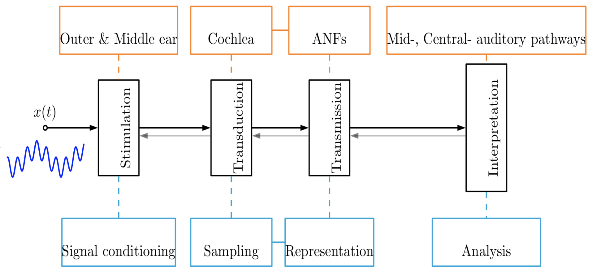
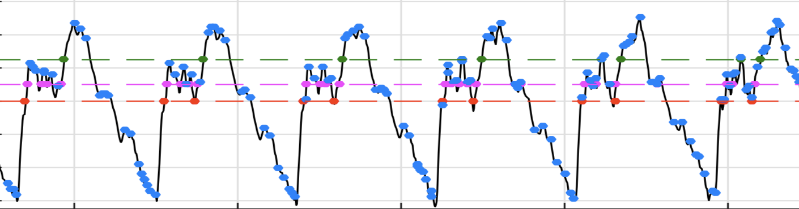
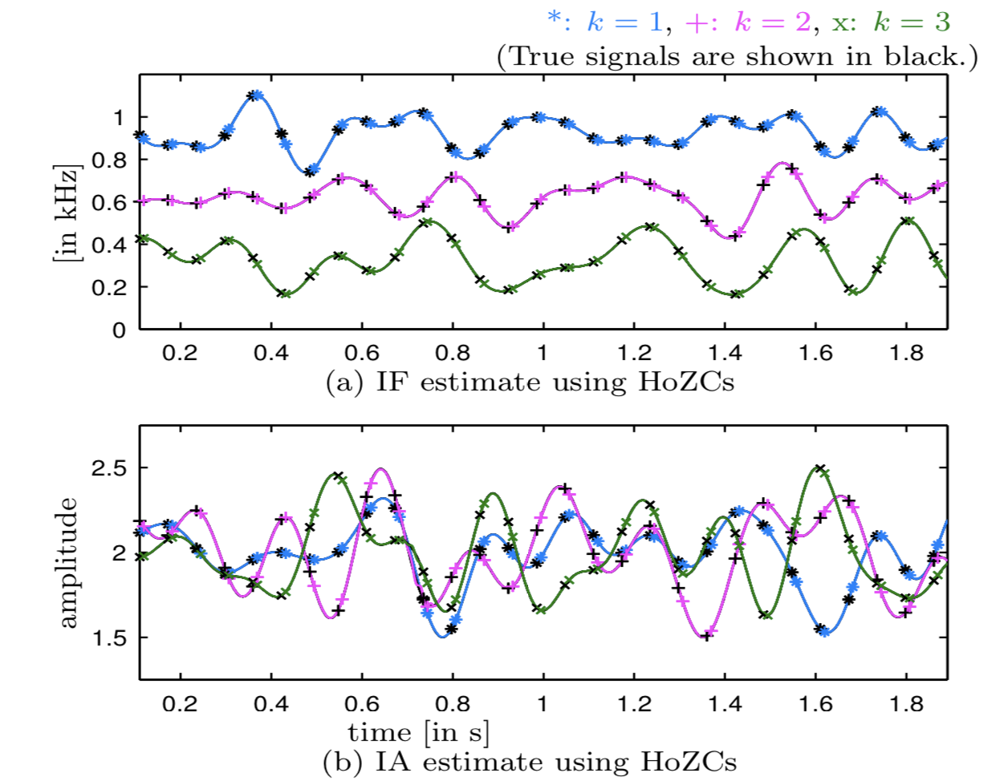

A huge class of non-stationary signals, which includes speech, music, birdsong, machine vibrations, and geophysical signals, feature a temporally evolving spectrum. Encountering non-stationarity is a rule rather than an exception while analyzing natural signals. Unlike stationary signal analysis, non-stationary signal analysis is a fairly challenging problem in the expanse of signal processing. Conventional approaches to analyze non-stationary signals use short-time quasi-stationary assumptions. Example, short-time signal segments are analyzed using one of several transforms, such as Fourier, chirplets, and wavelets, with a pre-defined basis. However, the quasi-stationary assumption is a serious limitation in recognizing fine temporal and spectral variations in signals. An accurate analysis of embedded variations can provide for more insightful understanding of natural signals. The thesis presents some approaches in this direction.
What is the motivation?
We believe that the human auditory system is often engaged in interpreting information from the ambient sounds, such as speech and audio, featuring immense signal non-stationarity. How is the auditory system so good at analysis and information extraction from these signals? Findings in the neuroscience literature suggest an information encoding scheme based on spiking activity (termed as neural firings) in the nerve fibers. It is observed that the spiking activity is synchronized to attributes, such as intensity, onset, and frequency content, etc., of the sound stimulus. Interestingly, over finer temporal resolution, the spiking is found to be synchronized with the instants of zero-crossings (ZCs) (and extrema, as well) of tone stimulus. Drawn by these findings, we conceptualize an event-synchronized sampling (ESS) and analysis of non-stationary signals. With event chosen as ZCs (and extrema) the sampling density (defined over short-time intervals) is time-varying. The time-varyingness adapts to the temporally evolving spectral content of the signal. In contrast to this, the sampling density is fixed (defined by an external clock) in traditional uniform Nyquist-rate samplers used in signal processing. We hypothesize that the captured dataset via ESS is a compact and informative dataset for analysis of non-stationary signals.
+ I will like to dedicate the thesis to all whom I have met in my journey till here. I have been fortunate to learn and have the company of wonderful people who have kept me inspired.
2  This chapter presents a review on auditory processing and the how it motivates an alternate non-stationary signal processing approach contrasting with traditional stationary methods. It serves as a tutorial illustrating some of the lucunae of traditional time-frequency analysis approaches.
3 Speech signals have a time-varying spectral content. This implies presence of time-varying redundancy in the signal, and opens up a possibility for adapting the sampling rate in continuous-time to discrete-time conversion. In this chapter, event-synchronized sampling using higher- order zero-crossings (HoZCs) is explored to facilitate such adaptation.  HoZCs refer to ZCs associated with higher-order derivatives of the signal. Signal reconstruction from the captured samples is pursued within a convex optimization framework.
4 A variety of non-stationary signals can be modeled as time-varying sinusoids, that is, $$x(t)=a(t)\sin2\pi\int_{0}^{t}f(\tau)d\tau.$$ Of interest in this signal model is estimating the instantaneous amplitude (IA,\(a(t)\)) and the instantaneous frequency (IF, \(f(t)\)). In this chapter, we evaluate the effectiveness of samples drawn from ESS in estimating the IA and IF. The proposed approach shows similar accuracy as widely used analytic signal, energy separation (which are based on uniform Nyquist-rate sampling and processing) and ZC based approaches, and some improvement in case of measurement noise. For the same dataset size, performance for extrema versus uniform sampling dataset, the former gives much better IA and IF estimation. An analysis for robustness of extrema instants to Gaussian additive in-band noise and jitter in sampling time instants is also pursued.
5  Here, we generalize the application of ESS from mono-component time-varying sinusoids to multi-component signals. We propose higher-order ZCs (HoZCs), or ZCs of signal derivatives, as informative samples for precise IA and IF estimation of each sinusoid in multi-component signals. It is shown that, over a wide range of modulation parameters, namely, bandwidth and modulation indices, the IA and IF signals associated with each sinusoid are preserved over successive signal derivatives. Further, successive differentiation induces a highest IF sinusoid amplitude dominance into the signal.
6 Speech signals contain a fairly rich time-evolving spectral content. Accurate analysis of this time-evolving spectrum is an open challenge in signal processing. Towards this, we designed an approach which overcomes some of the challenges using foundational concepts in signal processing.
7 Here, I present some future directions which build on the topics explored in this thesis.